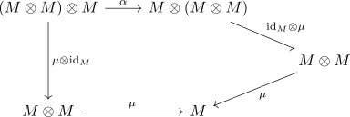
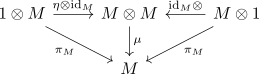

monoid object
Definition
Let $\mathcal{C}$ be a monoidal category and $M \in \mathrm{Ob}(\mathcal{C})$. Then $M$ (with following morphisms) is said to be a monoid object, if
- there exists a morphism $\eta: 1 \rightarrow M$ for the tensor unit $1$
- there exists a morphism $\mu: M \otimes M \rightarrow M$, called the multiplication functor
- associativity holds, i.e.

for the associator $\alpha$
- the diagram

commutes